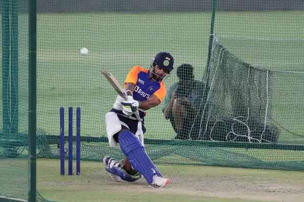
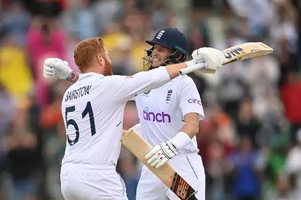
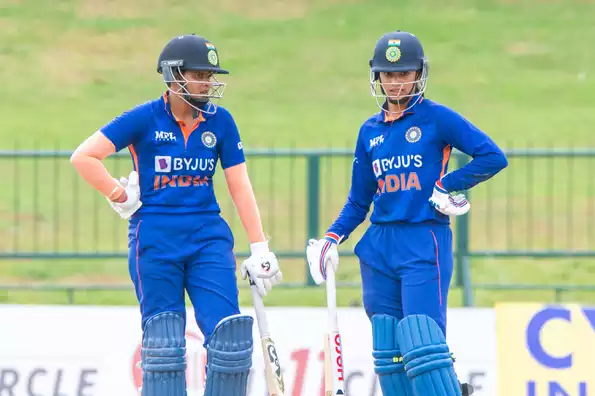

06 July, 2022
Shikhar Dhawan to lead ODI squad in West Indies
Shikhar Dhawan will lead India in the three-match ODI series on their tour of West Indies later this month, the BCCI announced on Wednesday (July 6). Ravindra Jadeja will serve as Dhawan's deputy in a 16-member squad that has notable absentees in Rohit Sharma, Virat Kohli, Jasprit Bumrah, Rishabh Pant, Hardik Pandya, Mohammed Shami as well as the injured KL Rahul.
Squad:Shikhar Dhawan (C), Ruturaj Gaikwad, Shubman Gill, Deepak Hooda, Suryakumar Yadav, Shreyas Iyer, Ishan Kishan (wk), Sanju Samson (wk), Ravindra Jadeja (VC), Shardul Thakur, Yuzvendra Chahal, Axar Patel, Avesh Khan, Prasidh Krishna, Mohammed Siraj, Arshdeep Singh

05 July, 2022
Root, Bairstow flatten India to level series with record chase
Joe Root and Jonny Bairstow hit centuries to make short work of what was their highest successful run chase in Tests to level the five-match series 2-2 against India. After having dominated the final session's play on Day 4, the duo carried on nonchalantly in the morning session of Day 5 when India's bowlers just couldn't find a way through the two.
Brief Scores: England 284 & 378/3 (Joe Root 142*, Jonny Bairstow 114*, Alex Lees 56, Zak Crawley 46; Jasprit Bumrah 2-53) beat India 245 & 416 by 7 wickets

04 July, 2022
India Women seal ODI series with 10-wicket drubbing of Sri Lanka
Renuka Singh recorded career-best figures of 4 for 28 before Smriti Mandhana (94* off 83) and Shafali Verma (71* off 71) hit unbeaten half-centuries as India handed Sri Lanka a 10-wicket drubbing to seal the ODI series with a match to spare. Put into bat, the hosts struggled their way to 173, a score India's openers chased down in 25.4 overs.
Brief scores: Sri Lanka Women 173 in 50 overs (Ama Kanchana 47*; Renuka Singh 4-28) lost to India Women 174/0 in 25.4 overs (Smriti Mandhana 94*, Shafali Verma 71*) by 10 wickets.